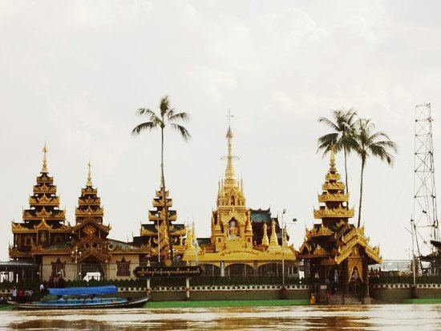
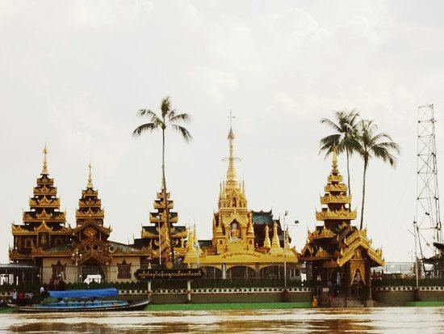
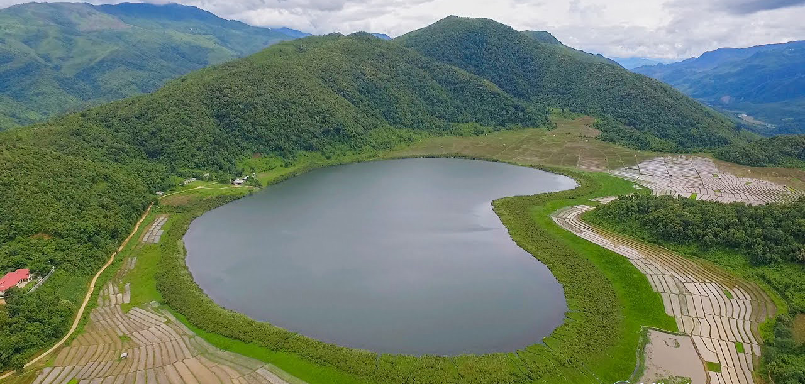
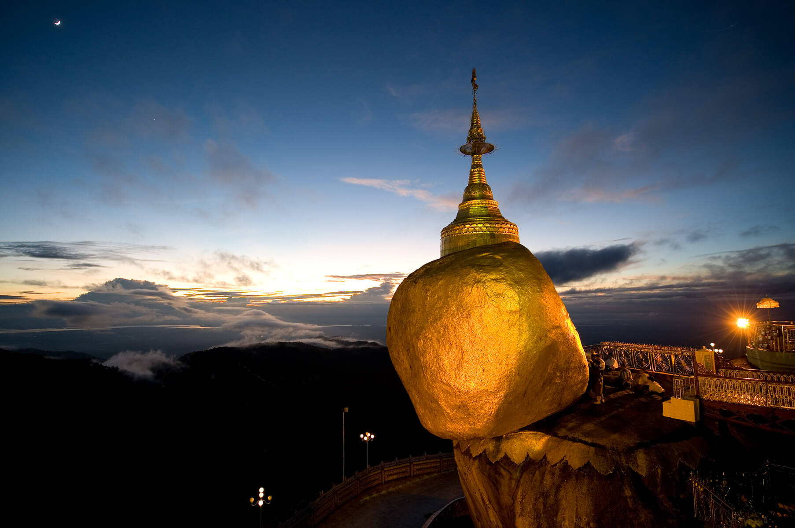
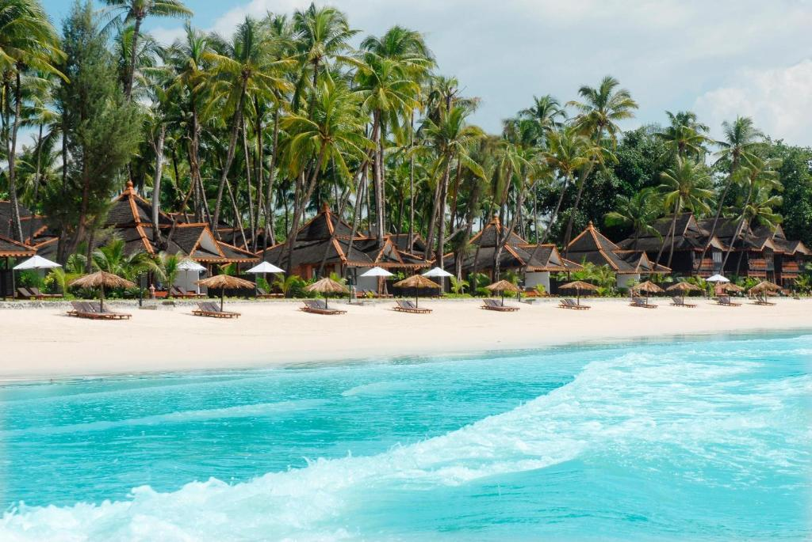

Kachin Pyi
Hkakabo Razi

Myanmar's highest mountain. The 5,881-meter (19,295 ft)-tall mountain is the highest mountain in Southeast Asia as well.
Kayah
Kyat Cave

Kyat Cave, being famous among travellers since a few years, is located 10 miles east of Loikaw. Travellers leading to Kyat Cave must come from Pinlaung to Loikaw.
Kayin
Zwe Ka Bim

Mount Zwegabin is a mountain in Myanmar. It is located in Kayin State, in the southern part of the country, around 450 km south of the capital Naypyidaw.
Chin
Rih Dil Lake
Rih Dil is a natural lake located in northwestern Chin State in Myanmar.
Burma
Bagan

Bagan is an ancient city and a UNESCO World Heritage Site in the Mandalay Region of Myanmar.
Mon
Kyaik Ti Yo
Mount Kyaiktiyo (Kyite Htee Yoe), famous for the huge golden rock perched at its summit, is one of the three most sacred religious sites in Myanmar, along with the Shwedagon Pagoda and the Mahamuni Temple.
RaKhine
Ngapali Beach
Best known for its stretch of fine white sand, Ngapali Beach is one of the top holiday destinations in Myanmar. Its palm trees, crystal clear waters, and hospitable people fulfill every tourist's tropical paradise fantasy.
Shan
Inn Lay
Inle Lake is in the Shan Hills of Myanmar. At its southwestern edge, Phaung Daw Oo Paya is a tiered pagoda with gilded Buddha statues.